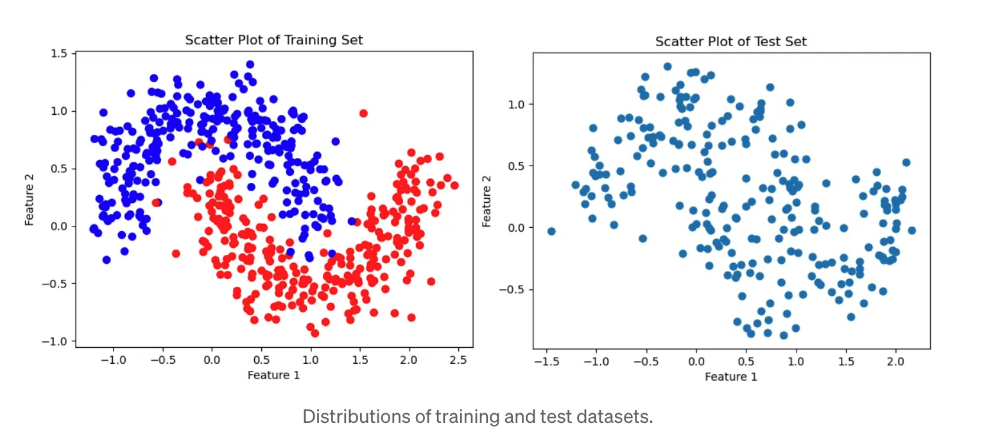
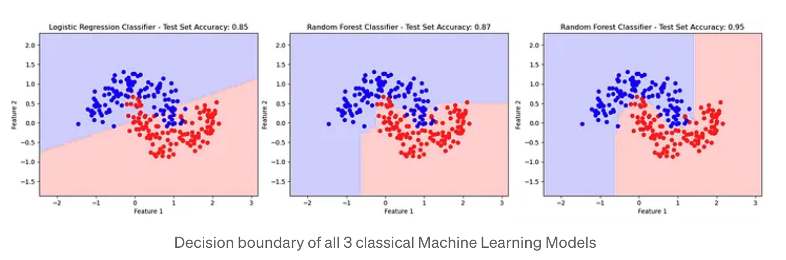
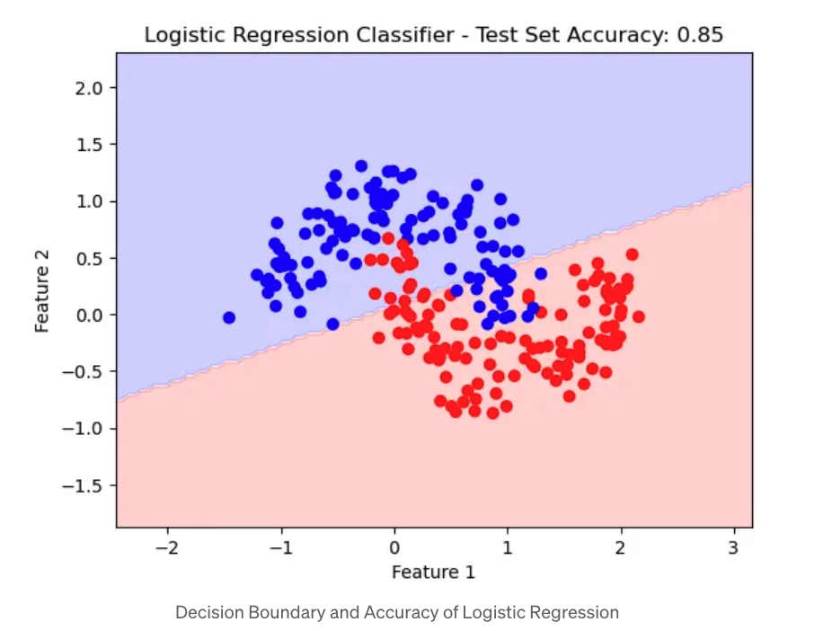
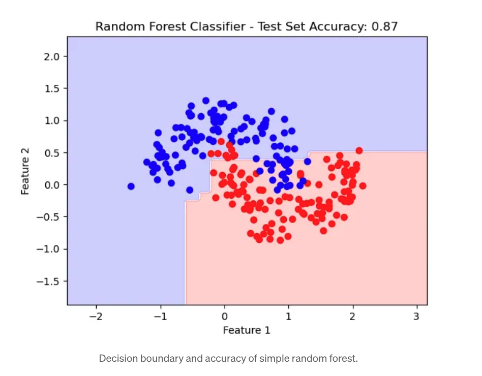
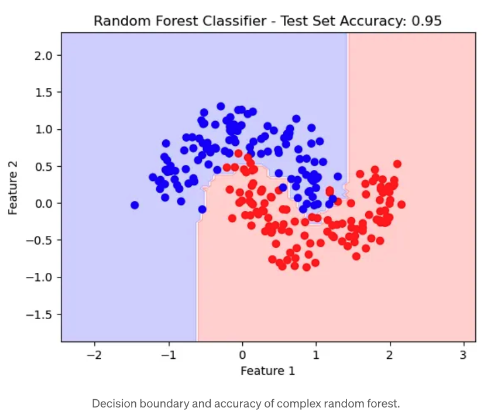
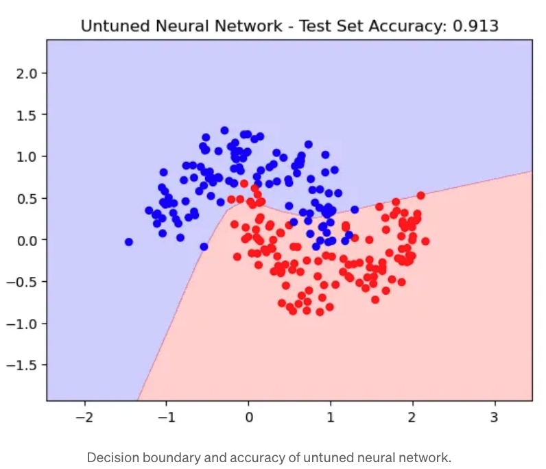
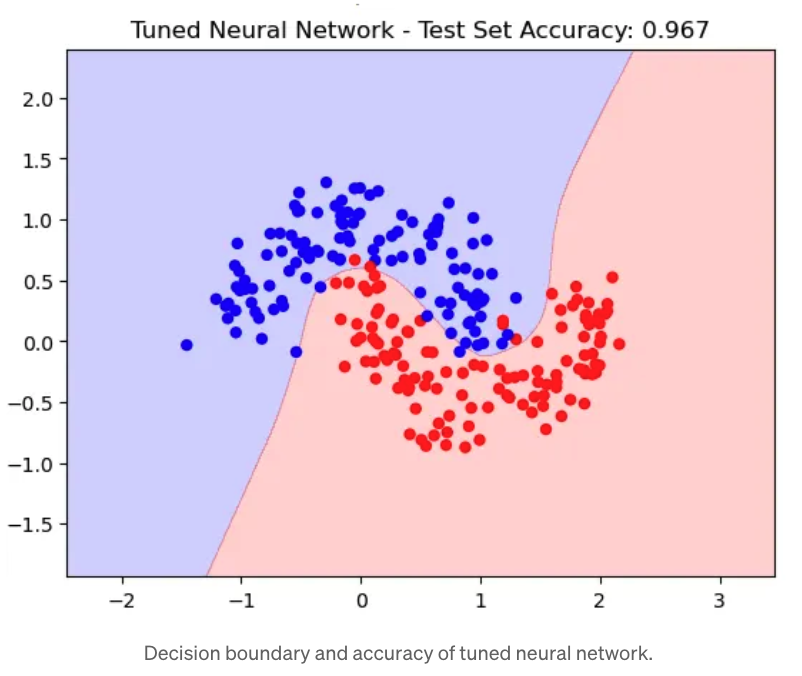
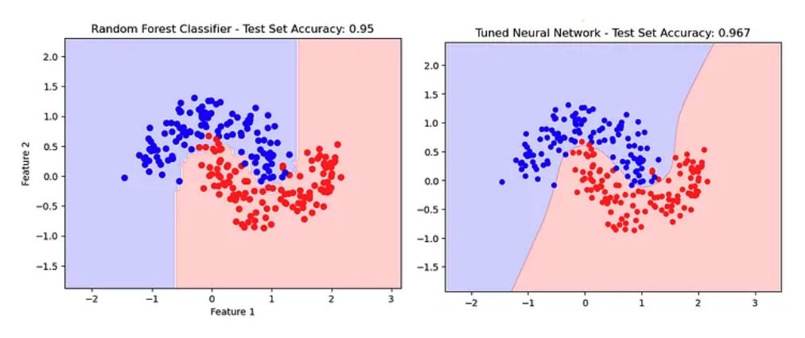

If you have ever interacted with ChatGPT, witnessed a self-driving car, or had to convince your parents that a Facebook post was actually just a deep fake created by their opposing political party, then you have been directly impacted by a Neural Network.
These innovative pieces of technology are taking center stage across data science, and their outputs are taking the front page of news outlets everywhere.
All data scientists should be familiar with Neural Networks, but I don't believe it's necessary for all data scientists to be experts.
Let's tackle the following in this article:
- Introduction to our task
- Performance across classical machine learning models
- Performance lift from Neural Networks
- Conclusion
Introduction to our Task

Our goal is to correctly classify a dataset with two columns where the target variable is either red or blue. In other words, we are trying to guess the color of the dots on the right, given the color of the dots on the left. The data follows a distinctive "moon-shaped" distribution.
Here's the code to create the training dataset and plot:
import numpy as np
import sklearn
from sklearn import datasets
from sklearn.model_selection import train_test_split
# Generate a dataset and plot it
np.random.seed(0)
X, y = sklearn.datasets.make_moons(800, noise=0.20)
X_train, X_test, y_train, y_test = train_test_split(X, y, test_size=0.30, random_state=0)
# Plot the training set
plt.scatter(X_train[:,0], X_train[:,1], s=40, c=y_train, cmap='bwr');
plt.title('Scatter Plot of Training Set');Performance Across Classical Machine Learning Models
Now we're going to try to classify the test dataset using three classical machine learning models: a (very) simple Logistic Regression, a simple Random Forest Classifier, and a more complex Random Forest Classifier.

Logistic Regression
The color of the dots represent the actual class of the data point, the decision boundary represents how each model classifies each point.

Note that the base logistic regression drew a linear decision boundary. For a lot of datasets, this would be a perfectly fine way to create our predictions, but given the unique non-linear / “moon-shaped” distribution of the classes, we will have to use other machine learning models to get a better prediction.
from sklearn import linear_model
import sklearn
from sklearn import datasets
from sklearn import linear_model
from sklearn.inspection import DecisionBoundaryDisplay
import matplotlib.pyplot as plt
from sklearn.model_selection import train_test_split
from sklearn.metrics import accuracy_score
# Train model
lr = sklearn.linear_model.LogisticRegressionCV()
lr.fit(X_train, y_train)
# Get Predictions
pred_scores = lr.predict_proba(X_test)[:, 1]
pred_classes = np.where(lr.predict_proba(X_test)[:, 1] >= .50, 1, 0)
# Draw decision boundary
disp = DecisionBoundaryDisplay.from_estimator(
lr, X_test, response_method="predict",
xlabel='Feature 1', ylabel='Feature 2',
alpha=0.2, cmap="bwr"
)
disp.ax_.scatter(X_test[:, 0], X_test[:, 1], c=y_test, cmap="bwr")
# Format chart title and print accuracy
acc = accuracy_score(y_test, pred_classes, normalize=True)
acc_message = 'Test Set Accuracy: ' + str(acc)
plt.title('Logistic Regression Classifier - ' + acc_message)
plt.show()Simple Random Forest Classifier
We could also use a Random Forest to predict our classes. The simple random forest with only 15 trees with a max depth of 2 yielded the following decision boundary. Note that the boundary lines are still linear, but the nature of the model allows us to more closely resemble the shape of our distribution by zig-zagging around the dots.

# Train Model
rf = RandomForestClassifier(max_depth=2, random_state=0, n_estimators=15)
rf.fit(X_train, y_train)
# Get Predictions
pred_scores = rf.predict_proba(X_test)[:, 1]
pred_classes = np.where(rf.predict_proba(X_test)[:, 1] >= .50, 1, 0)Complex Random Forest Classifier
If we were to make a more complex Random Forest model, we could draw more nuanced lines that closely mimic the actual distribution of the test set (see next image below).
Note the jump in accuracy from the high eighties up to 95% with this version of a random forest (see code below for model parameters).
Even though we’re still working with linear boundaries, we’re able to find the moon-shaped distribution with a more complex random forest.

# Train Model
rf = RandomForestClassifier(max_depth=40, random_state=0, n_estimators=60)
rf.fit(X_train, y_train)
# Get Predictions
pred_scores = rf.predict_proba(X_test)[:, 1]
pred_classes = np.where(rf.predict_proba(X_test)[:, 1] >= .50, 1, 0)Performance Lift from Neural Networks
Lastly, let's use a Neural Network to classify the dots. This task is a good fit for a neural network given the non-linear nature of the moon-shaped dataset.
My base neural network yielded curved lines to classify the points, but we're still under-performing our complex random forest above.

Note the curved lines used to classify the points, but we’re still under-performing our complex random forest above.
Here is the code to create this neural network:
from keras.models import Sequential
from keras.layers import Dense
from keras.optimizers import Adam
from keras.utils import to_categorical
model = Sequential([
Dense(64, input_shape=(X_train.shape[1],), activation='relu'), # First hidden layer
Dense(32, activation='relu'), # Second hidden layer
Dense(2, activation='softmax') # Output layer with 2 units for 2 classes
])
# Compile the model
model.compile(optimizer=Adam(learning_rate=0.001), loss='categorical_crossentropy', metrics=['accuracy'])
# Train the model
history = model.fit(X_train, y_train, epochs=20, batch_size=32, validation_data=(X_test, y_test))Tuned Neural Network
After making the following changes, I achieved much better results:
- Increased the number of hidden layers from 2 to 4
- Increased the learning rate from 0.001 to 0.007
- Reduced the number of training epochs from 20 to 7
We ended up with the following decision boundary:

Note the very specific curved decision boundary. And more importantly, note the increase in accuracy from 95% (from the complex random forest) to 95.7% (for the tuned neural network above).
Here is the code to create this tuned neural network:
from sklearn.model_selection import train_test_split
X_train, X_test, y_train, y_test = train_test_split(X, y, test_size=0.5, random_state=0)
# Ensure your labels are one-hot encoded
y_train = to_categorical(y_train)
y_test = to_categorical(y_test)
# Added additional layer AND # of neurons per layer
model = Sequential([
Dense(128, input_shape=(X_train.shape[1],), activation='relu'),
Dense(64, activation='relu'),
Dense(32, activation='relu'),
Dense(16, activation='relu'),
Dense(2, activation='softmax') # Adjust output layer as needed
])
# Increased the learning rate (from 0.001 to 0.007)
model.compile(optimizer=Adam(learning_rate=0.007), loss='categorical_crossentropy', metrics=['accuracy'])
# Decreased # of epochs to reduce the risk of the large learning rate over-shooting the minimum
history = model.fit(X_train, y_train, epochs=7, batch_size=15, validation_data=(X_test, y_test))Conclusion
We started with a logistic regression with 85.0% accuracy, quickly jumped our accuracy up to 95.0% with a random forest, and lastly improved to 95.7% with a neural network.
While the neural network performed the best (and could perform even better if we took more time), it also was by far the most difficult to build. It takes a long time to train, and tuning the parameters was tedious. It also worked well with our small dataset of under 1,000 records, but increasing the size to something in the real world would take much longer.

My thought is that you can always go back and fine tune your models if your company has lots of time, but most data scientists are challenged to move quickly and don't have the luxury to spend years building a single model (or decades in the case of self-driving cars).
You can always start with a classical model (like XGBoost or Random Forest) before moving to something more complex like a neural network. Classical models are also much easier to explain to non-technical audiences, whose buy-in you'll need to deploy your model.
The best models are the ones that drive action — not the ones that take a year to build only to fall flat when presenting to a non-technical stakeholder.
One final note: There are lots of use cases that make sense for neural networks. While the lift was small in performance for this toy task, there are other tasks where the neural network would greatly outperform classical models. If this were an image classification task, I would start with neural networks and not even bother with other models.
Thanks for making it this far! Feel free to check out my GitHub repository or reach out on LinkedIn if you want to discuss further.